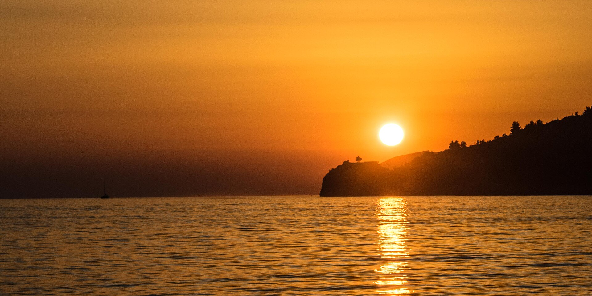
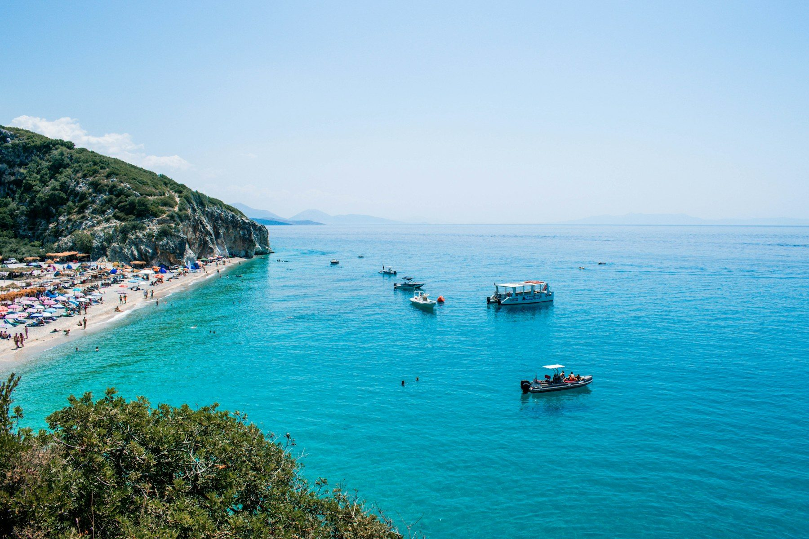

Marked on the map · 2 pins
Nicole's own pins from the map list — each opens straight in Google Maps.

No. 15 · Albania · from the Albania deck · Riviera beaches · the southern coast
The Albanian Riviera at its beachiest — two pinned coves, one easy and one earned — plus the deck's additions if the south gets the time: the Gjipe walk, a private boat day, Porto Palermo, and the Old Qeparo & Borsh run to Sarandë.
The list
| No. | Thing | Notes |
|---|---|---|
| 1 | Sunset at Livadhi | Get there an hour before sunset, claim a spot near the water, order something cold. Nicole's pinned sunset spot. |
| 2 | Kayak to Filikuri | Rent a kayak or paddle boat from Spile beach and paddle round the headland — easier than the cliff scramble down. |
| 3 | Himarë old town | The hillside quarter above the coast road, with the castle walls at the top. |
| 4 | Gjipe cove | The deck's scenic walk: a track down to a secluded cove between cliff walls, pebble beach at the bottom, a canyon walk above it. Go early; the track gets busy mid-morning. |
| 5 | A private boat day | The deck's big-adventure slot: hire a boat (with a skipper) for the day and work the coastline — sea caves, hidden coves, swims off the ladder. |
| 6 | Porto Palermo Castle | Ali Pasha's small fortress on its own spit of a peninsula, twenty minutes south. Half an hour is enough; the water around it is the rest of the attraction. |
| 7 | Old Qeparo & Borsh | The deck's Day 6 coastal-road trip on the way south: the stone hill village of Old Qeparo, then Borsh's long olive-backed beach, then continue towards Sarandë. |

Eat & drink: seafood grills on the seafront; all cash (lek) for kayaks and sunbeds. The deck plans two nights in Himarë, base for the Gjipe walk and the boat day.Field note · Balkans 2027
Marked on the map · 2 pins
Nicole's own pins from the map list — each opens straight in Google Maps.
| No. | Pin | Open |
|---|---|---|
| 1 | Livadhi Beach"Watch sunset from this beach." — the big sandy bay just north of town. | Maps ↗ |
| 2 | Filikuri Beach"Secluded beach, need to scramble down a cliff to get there or hire a kayak or paddle boat." | Maps ↗ |